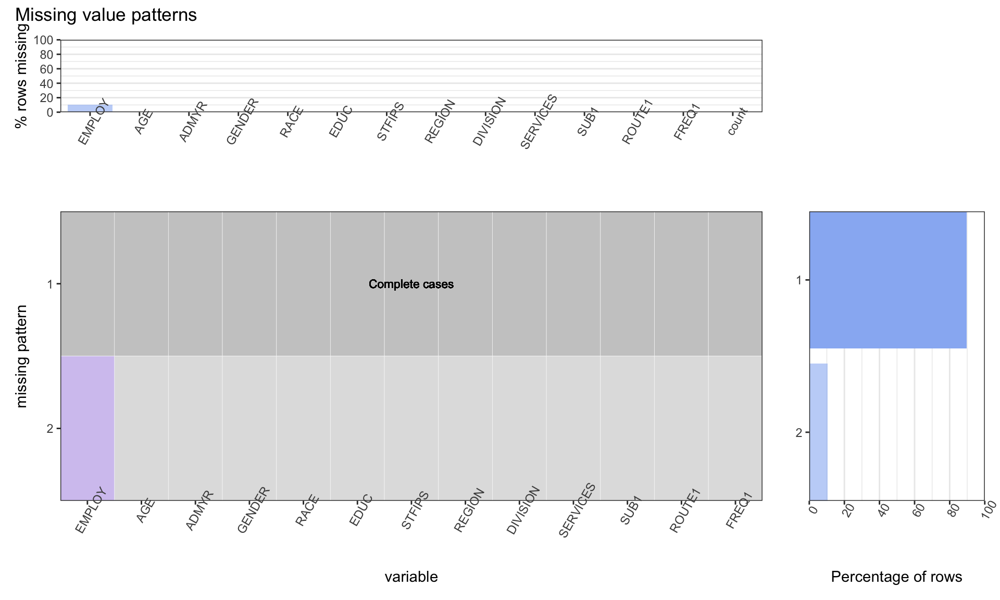
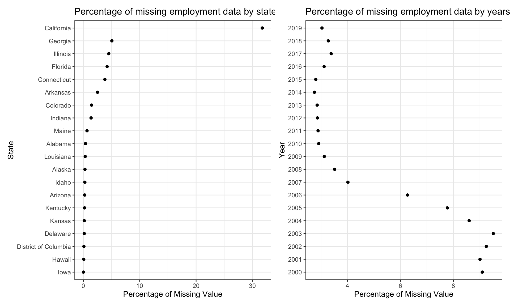

Chapter 4 Missing values
4.1 Number of missing attributes
As we had a lot of data initially ~37M rows, we removed rows from each categorical variable, that were less in percentage. For more details, see the data transformation section here. The following visualization gives information about missing data after the transformation:
 Observations:
- Only the Employment column seem to be missing values. About 10% of rows in the data seem to have missing value for this column. We feel 10% is a lot of data to be removed directly and it might still hold information. For example: The information is missing for a particular state or year etc.
4.2 Understanding missing values pattern
 Onservations:
- The Employment data was missing during the early 2000’s. The recent data has information about employment.
- The state of California account for 30% of the missing data. This is much larger than any other state.